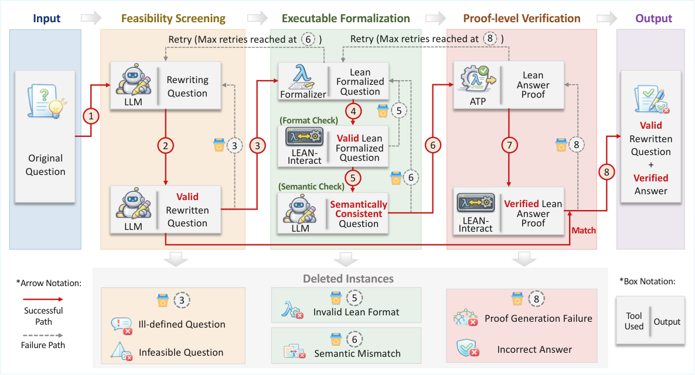
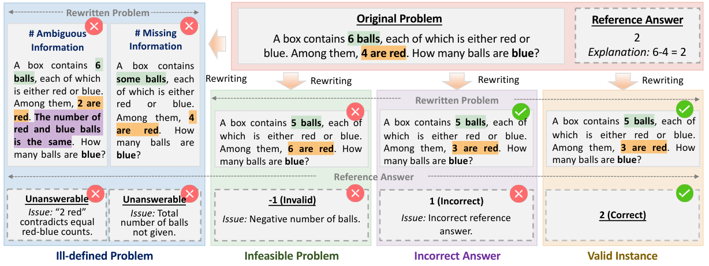
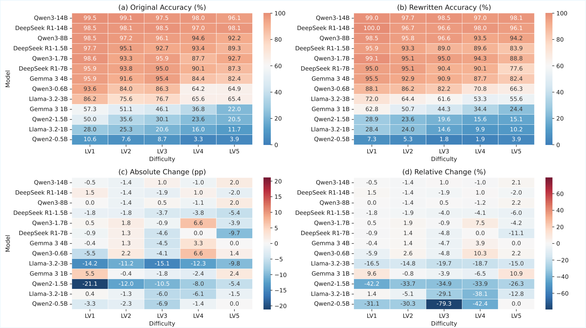

Rewritten benchmark problems are formalized in Lean and verified by neural ATPs with kernel-level proof checking to ensure answer correctness.
Abstract
Data contamination undermines the reliable evaluation of large language models (LLMs) on mathematical problem solving. While rewriting-based evaluation mitigates memorization, existing methods lack guarantees of problem validity and answer correctness. We propose Proof-Verified Benchmark Rewriting (RePro), the first framework to integrate Lean-oriented neural automated theorem provers (ATPs) into benchmark rewriting, which rewrites problems and regenerates answers with correctness ensured by Lean-verified proofs. Experiments on GSM8K and MATH show that RePro's retained rewritten instances achieve 100% well-definedness, feasibility, and answer correctness, while existing methods still produce invalid or incorrect instances. Moreover, several models exhibit accuracy drops on proof-verified rewritten benchmarks, suggesting that their performance is sensitive to surface-level and structural variations and may partly reflect memorization effects. Our source code and data are available at https://github.com/AI4Engi/RePro.
Problem
Data contamination undermines reliable evaluation of LLM mathematical reasoning, and existing benchmark-rewriting methods rely on heuristic validation that cannot guarantee problem validity or answer correctness.
Approach
RePro integrates Lean-oriented neural automated theorem provers (e.g., Goedel-Prover, DeepSeek-Prover) into the benchmark rewriting pipeline. Candidate rewrites generated by an LLM are filtered for basic validity, then translated into executable Lean formal specifications. An ATP performs proof search and Lean's kernel checks correctness, retaining only well-defined, feasible instances with formally verified reference answers.

Figure 2: Framework of the proposed verification pipeline for rewriting-based evaluation. The pipeline progressively filters rewritten instances to obtain valid questions with verified answers.

Figure 3: Failure modes of rewriting-based evaluation and our solution. Rewriting may introduce three types of reliability issues: (1) ill-defined problems caused by ambiguous or missing information, (2) infeasible problems due to conflicting constraints, and (3) incorrect answers where the reference answer is wrong. A rewritten instance is valid only if the problem is well-defined, feasible, and
Results
On GSM8K and MATH, RePro's retained rewritten instances reach 100% well-definedness, feasibility, and answer correctness, whereas AutoDataset, ITD, and VarBench still produce invalid or incorrect instances. Several models show accuracy drops on proof-verified rewritten benchmarks, indicating memorization sensitivity.

Figure 8: Impact of problem rewriting on model performance across five difficulty levels. (a) Original accuracy. (b) Accuracy after rewriting. (c) Absolute accuracy change (percentage points). (d) Relative accuracy change (percentage). Positive values indicate improvements, while negative values indicate performance drops.
Method
GSM8K Correct
MATH Correct
Auto-Dataset
87.10
79.99
ITD
89.11
81.15
VarBench
95.14
87.36
RePro (Ours)
100.00
100.00
Rewriting quality on full datasets (Well-defined / Feasible / Correct, %)